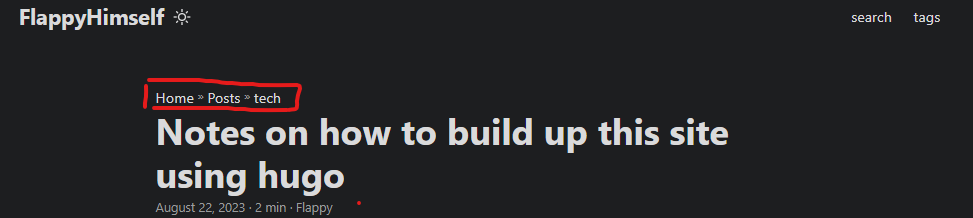
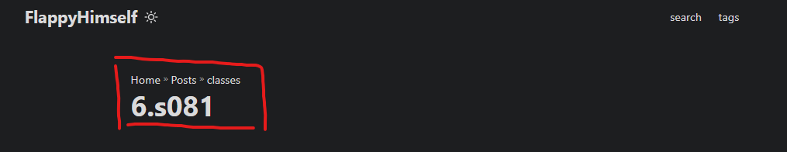
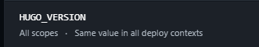

preword: I built this static website for compiling notes of knowledge. I dont want to focus too much on “deeper magic” on website-building technology but just write notes about computer science and other types of knowledge. (/smile)
precondition: Installed hugo, git
Resources
Getting Started With Hugo | FREE COURSE
preknowledge recap
quick github recap.
git remote add <github remote repo name> <repo url (better ssh since it caused several error using http)>
git remote remove <github remote repo name>
buildup this website
set up your blog directories.
hugo new site <sitename> -f yml will create static website.
loading theme.
Here I am using papermod theme, so I clone their repo into my ./themes/ folder/
git clone https://github.com/adityatelange/hugo-PaperMod themes/PaperMod --depth=1
Add in config.yml:
theme: "PaperMod" and theme is automatically set.
setup of configuration file. (config.yml)
You can find them in github pages of your own theme’s developer. Below is my .yml file.
baseURL: "https://flappyhimself.netlify.app/"
languageCode: en-us
title: FlappyHimself
theme: PaperMod
enableInlineShortcodes: true
enableEmoji: true
enableRobotsTXT: true
hasCJKLanguage: true
buildDrafts: false
buildFuture: false
buildExpired: false
paginate: 15
minify:
disableXML: true
permalinks:
post: "/:title/"
defaultContentLanguage: en
defaultContentLanguageInSubdir: true
languages:
en:
languageName: "English"
# contentDir: content/english
weight: 1
profileMode:
enabled: true
title: This is my note compilation.
subtitle: "learn and practice"
imageUrl: "http://p0.itc.cn/q_70/images03/20200905/3c619b233f9f44f6865c919f49b75478.jpeg"
imageWidth: 100
imageHeight: 100
buttons:
- name: tech
url: posts/tech
- name: life
url: posts/life
- name: class
url: posts/classes
menu:
main:
- identifier: search
name: search
url: search
weight: 1
- identifier: tags
name: tags
url: tags
weight: 3
outputs:
home:
- HTML
- RSS
- JSON
params:
env: production
author: Flappy
defaultTheme: auto #
disableThemeToggle: false
ShowShareButtons: true
ShowReadingTime: true
displayFullLangName: true
ShowPostNavLinks: true
ShowBreadCrumbs: true
ShowCodeCopyButtons: true
hideFooter: false
ShowWordCounts: true
VisitCount: true
ShowLastMod: true
ShowToc: true
TocOpen: true
comments: true
socialIcons:
- name: github
url: "https://github.com/FlappyBob"
- name: twitter
url: "https://twitter.com/FlappyHimself"
fuseOpts:
isCaseSensitive: false
shouldSort: true
location: 0
distance: 1000
threshold: 0.4
minMatchCharLength: 0
keys: ["title", "permalink", "summary", "content"]
Content structure, and its relationship with config file
.
├── config.yml
├── content/
│ ├── archives.md <--- Create archive.md here
│ └── posts/ ────│tech
│ │
│ └── first/
│ └── pic/
│ └── index.md/
│ └── second/
│ └── pic/
│ └── index.md/
├── static/ ────│tech
│ │
│ └── first/
│ └── background picture1/
│ └── second/
│ └── background picture12/
└── themes/
└── PaperMod/

- content is the mother folder that contains all real data that shows up in one blog.
- pic (sub folder) that holds picture references in one blog. The directories’ names are named as the blog name.
I usually manage my file strucuture like this:
- I will split several categories in my posts. Accordingly, life/ tech/ classes. (I will split subfolder even further, like MIT6.s081/ CSAPP notes in subfolder classes. )
- Then create _index.md file for each folder that is a mother folder, except the folder that holds the article.
- In an article folder, there is one index markdown file that contains the artiocle and there is another pic folder that contains the pictures.
- I use the static folder to contains cover pictures.
Below is the example frame that I use.  How a typical content is made of.
---
title: "How to build up site using hugo"
date: 2023-08-22T23:51:11-04:00
showToc: true # show the directoreis of the article.
TocOpen: true
cover:
image: tech/first/hello.png
caption: 'game(ff14) -- my avatar on behalf of thinking hard'
tags:
- "blog"
---
Connect to a real website.
netlify service setup Netlify is a service that builds up webpage using your existing github repository, and it automatically renews as you push contents to your github repo.
-
write config as following

-
write environment variable of your hugo version like below. 
-
add a domain name.
workflow
Here the workflow becomes smooth as silk.
- create markdown flie and find a comfortable text editor
hugo new posts/<file name.md> - write a script that upload your recent change, mostly I don’t care about the commit message when writing my own blog. (I am windows, so create a .bat file)
git add ./
git commit -m "finish setting"
git push blog main
- run the script and see changes on your website (usually take a few seconds)